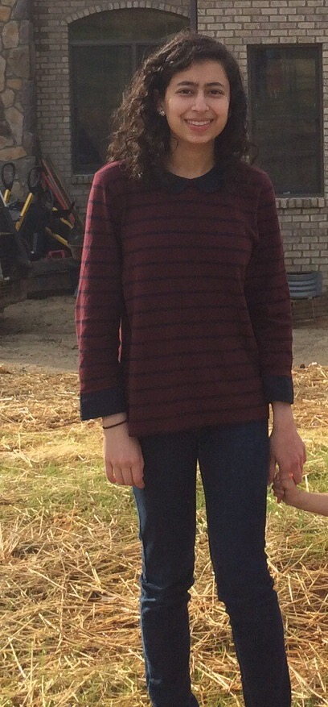
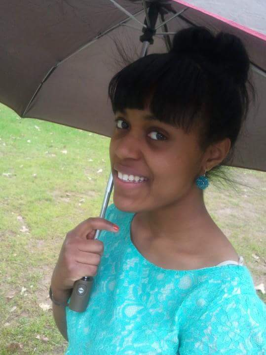
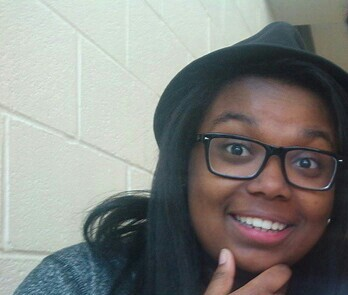
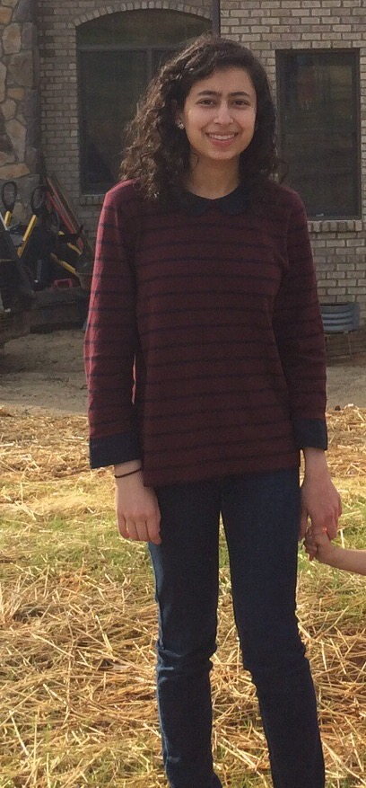

D= DAVIELLE A= ASIA B= BRIANNA Z= ZAINAB
Asia Nelor- FRONT AND BACK END
WEBSITE ADMINISTRATIVE PROGRAMER/THEME SONG&LOGO DESIGNER

Hi, I'm Asia.
Band Geek, Gryffindor, and Natural Hair Enthusiast! Im a Junior at Stilwell school of the arts majoring in Band. Im a Georgia aquarium volunteer with a
love for marine life, and I love tech!
Zainab Khawaja - HEAD ADMINISTRATIVE FRONT/BACK END
GAME MAKER/PROGRAMMER

Hi, I'm Zainab!
I'll be a rising senior at Lakeside High School. I love all things computer science, medicine, and journalism! I'm
hoping to have a career that can include all three! Girls Who Code has been such a wonderful
experience because I've found that in CS you are literally the creator of all of your projects so it's nice to
be able to put your thoughts into code (even if it can take quite some time)!
Faith is taking the first step even when you don't see the whole staircase.
-Martin Luther King, Jr.
Brianna Beasley -HEAD ADMINISTRATIVE FRONT/BACK END
GAME MAKER/PROGRAMMER

Hi, I'm Brianna!
I'm a Christian, absolute foodie, geek,
homeschooler, and now lover of CS!
I spend most of my spare time cooking and spending time with my three siblings.
I really value family and friends and love making people happy with food! I've really enjoyed
being in the Girls Who Code program this summer and plan to continue taking CS and programming courses.
Davielle Matos- LEAD GAME MAKER AND PROGRAMMER

My name is Davielle Matos and I am 17, a Christian, a gamer and a lover for technology. I spend most of my time reading, playing cello, and intellectually challenging myself (solving Rubik's cubes). I plan on going to Georgia Tech and then to MIT for grad school for a double major of computer science and video game design. I love technology and enjoy studying more about it in the future.
WEBSITE ADMINISTRATIVE PROGRAMER/THEME SONG&LOGO DESIGNER
Hi, I'm Asia.
Band Geek, Gryffindor, and Natural Hair Enthusiast! Im a Junior at Stilwell school of the arts majoring in Band. Im a Georgia aquarium volunteer with a
love for marine life, and I love tech!
Zainab Khawaja - HEAD ADMINISTRATIVE FRONT/BACK END
GAME MAKER/PROGRAMMER

Hi, I'm Zainab!
I'll be a rising senior at Lakeside High School. I love all things computer science, medicine, and journalism! I'm
hoping to have a career that can include all three! Girls Who Code has been such a wonderful
experience because I've found that in CS you are literally the creator of all of your projects so it's nice to
be able to put your thoughts into code (even if it can take quite some time)!
Faith is taking the first step even when you don't see the whole staircase.
-Martin Luther King, Jr.
GAME MAKER/PROGRAMMER